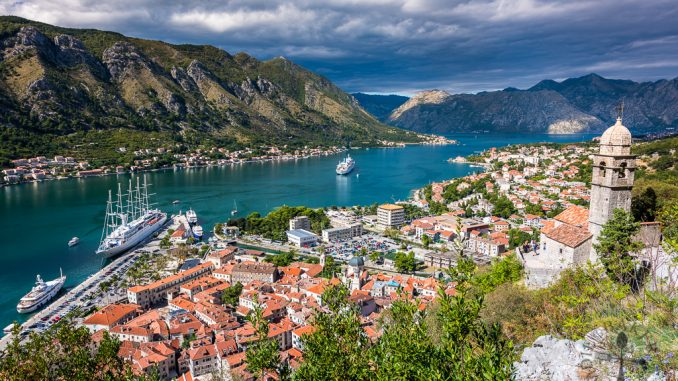

| Redni broj |
Naziv grada |
Naziv regije |
Broj stanovnika |
3 znamenitosti |
Fotografija |
| 1 |
Bar |
Južna |
40 037 |
- Saborni hram Svetog Jovana Vladimira
- Stara maslina
- Tvrđava Stari Bar
|
 |
| 2 |
Berane |
Sjeverna |
35 000 |
- Manastir Đurđevi stupovi
- Jasikovac
- Polimski muzej
|
|
| 3 |
Bijelo Polje |
Sjeverna |
42 191 |
- NP Biogradska gora
- Đalovica pecina
- Vidikovac Bendovac
|
|
| 4 |
Budva |
Južna |
22 061 |
- Stari grad Budva
- Ostrvo Sveti Nikola
- Ruinovi nekropola rimske ere
|
 |
| 5 |
Danilovgrad |
Srednja |
18 472 |
- Manastir Ostrog
- Manastir Ždrebaonik
- Kapetanovo jezero
|
|
| 6 |
Kotor |
Južna |
22 601 |
- Katedrala Svetog Tripuna
- Gospa od Škrpjela
- Sveti Đorđe
|
 |
| 7 |
Niksic |
Srednja |
72 443 |
- Jezero Krupac
- Bedem
- Trebjesa
|
 |
| 8 |
Pljevlja |
Sjeverna |
36 918 |
- Husein Pašina Džamija
- Manastir Svete Trojice
- Crkva Svetog Ilije
|
|
| 9 |
Podgorica |
Srednja |
189 260 |
- Saborni hram Hristovog Vaskrsenja
- Sastavci
- Ostaci grada Duklje
|
|
| 10 |
Ulcinj |
Južna |
19 921 |
- Stari grad Ulcinj
- Solana
- Velika plaza
|
|